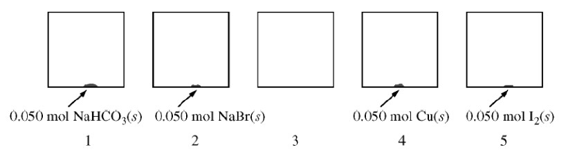

At \(27^\circ \)C, five identical rigid \(\pu{2.0 L}\) vessels are filled with \(\ce{N2(g)} \). Four of the five vessels also contain a \(0.050\) mol sample of \(\ce{NaHCO3(s)} \), \(\ce{NaBr(s)} \), \(\ce{Cu(s)}\), or \(\ce{I2(s)}\), as shown in the diagram below. The volume taken up by the solids is negligible, and the initial pressure of \(\ce{N2(g)}\) in each vessel is \(\pu{720 mm Hg}\). All four vessels are heated to \(127^\circ \)C and allowed to reach a constant pressure.

At \(127^\circ \)C, the pressure in vessel 1 is found to be higher than that in vessel 2. Which of the following reactions bests accounts for the observation?